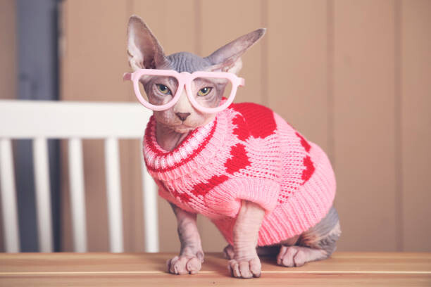

Mila

Hello ! I'm Mila
I'm a 4 year old Sphynx Cat who needs a loving and caring
home! I am super playful, sociable, and intelligent. I'm
highly affectionate and love to cuddle as well!
- Age - 4
- Breed - Sphynx Cat
- Gender - Female
- Weight - 8 Pounds
- Energy Level - High Energy
- Favorite Activity - Jumping, Playing and Climbing
-
Personality - Curious, Cuddly, Energetic, and
Affectionate